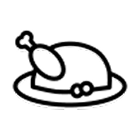

Timing Alimentação
Qual a importância?
A alimentação de um atleta vai muito além da contagem de calorias. O timing das refeições é fundamental para otimizar o desempenho, a recuperação muscular e a saúde geral. Para um atleta, cada refeição tem um propósito específico, e o horário em que ela é consumida pode ser tão importante quanto o que está no prato.
Podemos dividir em 4 etapas essenciais: café da manhã, almoço, lanche da tarde e jantar.
-
Café da manhã (antes do treino ou para iniciar o dia)

• Aveia com leite ou bebida vegetal + banana fatiada + uma colher de pasta de amendoim
• Omelete com 2 ovos + espinafre ou tomate
• Suco natural ou água para hidratar
Objetivo:
• Carboidratos de digestão lenta para energia, proteína para músculos, gorduras boas para saciedade.
-
Almoço
• Arroz integral ou batata doce
• Frango, peixe ou carne magra
• Salada variada (folhas verdes, tomate, cenoura) com azeite
• Legumes cozidos ou no vapor
• Suco natural ou água para hidratar
Objetivo:
• Refeição completa com carboidrato, proteína, gorduras saudáveis e micronutrientes.
-
Lanche da tarde

• Mix de castanhas + fruta
• Iogurte natural ou queijo cottage
Objetivo:
• Manter energia, proteína para recuperação e saciedade.
-
Jantar
• Quinoa ou macarrão integral
• Peixe ou frango
• Legumes cozidos ou assados
• Salada de folhas
Objetivo:
• Refeição leve, rica em proteína e micronutrientes, carboidrato suficiente para energia do dia seguinte.
-
Ceia (opcional, se houver treino intenso ou necessidade calórica)
• Leite ou bebida vegetal + aveia ou cacau
• Omelete de claras ou iogurte
Objetivo:
• Fornecer proteína para recuperação muscular durante o sono.
-
Timing das refeições
• Pré-treino (1-2 horas antes): carboidratos de digestão média, proteína leve, pouca gordura.
• Pós-treino (até 1 hora após): carboidrato + proteína para recuperação muscular.
• Ao longo do dia: refeições balanceadas a cada 3-4 horas ajudam na energia constante e síntese proteica.
Objetivo:
• Manter energia, proteína para recuperação e saciedade.
Body Sport Tech, o guia gratuito do esportista iniciante!